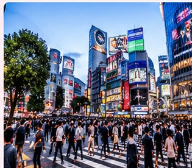
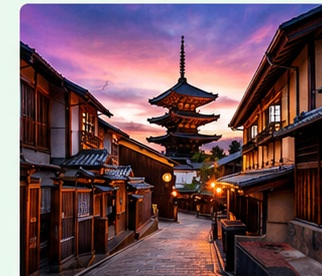
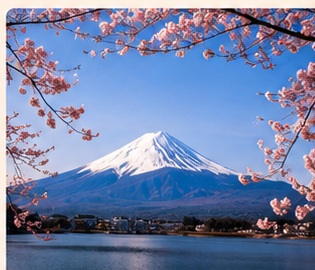
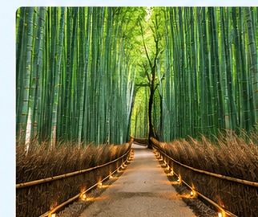
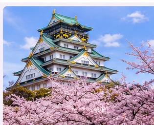
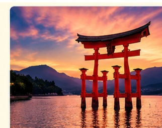

This is the first place
It is home to be good for you,we have a good option for this amazing place.
It's at SHIBUYA CROSSING.
You can stay there at 5 stars hotel
with only 1000 JPY.

This is forth place
It is in ancient Kyoto.We will take you for the visit this place
for 6 hours to see all buildings.

This is second place
It is near Mount Fuji.We will take you for the visit this place
for 6 hours to see beautiful views.

This is third place
It is in the famous bamboo forest.We will take you for the visit this place
for 6 days to see all the beautiful places
and stay there in our 5 stars hotel
for only 1500 JPY.

This is an amazing place
It is Osaka Castle.We will take you for the visit this place
for 6 hours
for only 500 JPY.

This is a famous place
It is a torii gate.We will take you for the visit this place
for 6 hours
for only 500 JPY.
